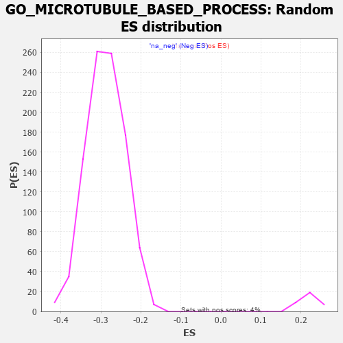

| | | Dataset | 7d |
| Phenotype | NoPhenotypeAvailable |
| Upregulated in class | na_neg |
| GeneSet | GO_MICROTUBULE_BASED_PROCESS |
| Enrichment Score (ES) | -0.47393647 |
| Normalized Enrichment Score (NES) | -1.6472018 |
| Nominal p-value | 0.0 |
| FDR q-value | 0.06356185 |
| FWER p-Value | 0.999 |
Table: GSEA Results Summary
 Fig 1: Enrichment plot: GO_MICROTUBULE_BASED_PROCESS
Fig 1: Enrichment plot: GO_MICROTUBULE_BASED_PROCESS
Profile of the Running ES Score & Positions of GeneSet Members on the Rank Ordered List
| PROBE | GENE SYMBOL | GENE_TITLE | RANK IN GENE LIST | RANK METRIC SCORE | RUNNING ES | CORE ENRICHMENT | | 1 | KLC3 | | | 28 | 3.799 | 0.0231 | No |
| 2 | TPPP3 | | | 195 | 1.079 | 0.0092 | No |
| 3 | KIFC3 | | | 232 | 0.978 | 0.0114 | No |
| 4 | KLC2 | | | 238 | 0.951 | 0.0175 | No |
| 5 | MLH1 | | | 423 | 0.679 | -0.0015 | No |
| 6 | CDC20 | | | 480 | 0.644 | -0.0042 | No |
| 7 | KIF23 | | | 522 | 0.622 | -0.0052 | No |
| 8 | CCNB1 | | | 581 | 0.601 | -0.0084 | No |
| 9 | NDC80 | | | 616 | 0.590 | -0.0087 | No |
| 10 | AURKC | | | 633 | 0.583 | -0.0067 | No |
| 11 | RAE1 | | | 827 | 0.524 | -0.0279 | No |
| 12 | IGBP1 | | | 869 | 0.514 | -0.0296 | No |
| 13 | PTPA | | | 947 | 0.497 | -0.0361 | No |
| 14 | ZPR1 | | | 967 | 0.491 | -0.0351 | No |
| 15 | RCC1 | | | 1043 | 0.475 | -0.0414 | No |
| 16 | AP3S1 | | | 1063 | 0.471 | -0.0406 | No |
| 17 | STAG2 | | | 1069 | 0.470 | -0.0379 | No |
| 18 | RFX3 | | | 1171 | 0.451 | -0.0478 | No |
| 19 | CRIPT | | | 1185 | 0.449 | -0.0463 | No |
| 20 | STK36 | | | 1193 | 0.448 | -0.0441 | No |
| 21 | CHD3 | | | 1232 | 0.442 | -0.0459 | No |
| 22 | TBCD | | | 1338 | 0.422 | -0.0565 | No |
| 23 | FKBP4 | | | 1390 | 0.412 | -0.0602 | No |
| 24 | DOCK7 | | | 1398 | 0.410 | -0.0582 | No |
| 25 | DDX4 | | | 1436 | 0.403 | -0.0602 | No |
| 26 | E2F4 | | | 1501 | 0.390 | -0.0657 | No |
| 27 | SON | | | 1538 | 0.385 | -0.0676 | No |
| 28 | LCA5L | | | 1598 | 0.374 | -0.0726 | No |
| 29 | BIRC8 | | | 1615 | 0.372 | -0.0721 | No |
| 30 | DRG1 | | | 1633 | 0.368 | -0.0717 | No |
| 31 | TPPP | | | 1646 | 0.365 | -0.0707 | No |
| 32 | TNPO1 | | | 1684 | 0.359 | -0.0730 | No |
| 33 | TPX2 | | | 1708 | 0.355 | -0.0734 | No |
| 34 | TRAK1 | | | 1714 | 0.354 | -0.0716 | No |
| 35 | ESPL1 | | | 1734 | 0.349 | -0.0716 | No |
| 36 | UVRAG | | | 1831 | 0.332 | -0.0817 | No |
| 37 | NUP62 | | | 1871 | 0.324 | -0.0844 | No |
| 38 | ZW10 | | | 1973 | 0.309 | -0.0953 | No |
| 39 | BRSK2 | | | 1979 | 0.308 | -0.0938 | No |
| 40 | DCTN6 | | | 1999 | 0.305 | -0.0941 | No |
| 41 | CENPE | | | 2086 | 0.293 | -0.1032 | No |
| 42 | INO80 | | | 2120 | 0.288 | -0.1054 | No |
| 43 | CDK2 | | | 2226 | 0.272 | -0.1171 | No |
| 44 | WASF1 | | | 2303 | 0.259 | -0.1251 | No |
| 45 | BCAS3 | | | 2352 | 0.253 | -0.1295 | No |
| 46 | CLIP4 | | | 2391 | 0.247 | -0.1327 | No |
| 47 | MET | | | 2430 | 0.240 | -0.1359 | No |
| 48 | KAT2B | | | 2502 | 0.226 | -0.1435 | No |
| 49 | SPG7 | | | 2525 | 0.223 | -0.1448 | No |
| 50 | ARL8B | | | 2577 | 0.216 | -0.1499 | No |
| 51 | BAG3 | | | 2620 | 0.209 | -0.1538 | No |
| 52 | DCTN3 | | | 2731 | 0.193 | -0.1667 | No |
| 53 | TTLL1 | | | 2764 | 0.189 | -0.1695 | No |
| 54 | FER | | | 2803 | 0.183 | -0.1731 | No |
| 55 | COPG2 | | | 2859 | 0.173 | -0.1790 | No |
| 56 | XPO1 | | | 2960 | 0.156 | -0.1908 | No |
| 57 | KIF4B | | | 2965 | 0.155 | -0.1903 | No |
| 58 | PEX1 | | | 2990 | 0.151 | -0.1923 | No |
| 59 | ULK4 | | | 3022 | 0.146 | -0.1953 | No |
| 60 | BRCA2 | | | 3024 | 0.146 | -0.1944 | No |
| 61 | MARK3 | | | 3031 | 0.145 | -0.1942 | No |
| 62 | FEZ1 | | | 3055 | 0.142 | -0.1961 | No |
| 63 | MAP2 | | | 3074 | 0.140 | -0.1975 | No |
| 64 | CHP1 | | | 3089 | 0.138 | -0.1983 | No |
| 65 | PAX6 | | | 3170 | 0.127 | -0.2078 | No |
| 66 | MEMO1 | | | 3237 | 0.115 | -0.2155 | No |
| 67 | GAS2 | | | 3392 | 0.090 | -0.2348 | No |
| 68 | KIF1A | | | 3415 | 0.088 | -0.2370 | No |
| 69 | CDK5 | | | 3480 | 0.080 | -0.2447 | No |
| 70 | FES | | | 3501 | 0.077 | -0.2467 | No |
| 71 | HDAC3 | | | 3528 | 0.072 | -0.2496 | No |
| 72 | PARD3 | | | 3584 | 0.063 | -0.2563 | No |
| 73 | SBDS | | | 3640 | 0.053 | -0.2630 | No |
| 74 | SMC3 | | | 3701 | 0.042 | -0.2705 | No |
| 75 | CEP19 | | | 3778 | 0.031 | -0.2801 | No |
| 76 | SPAST | | | 3801 | 0.027 | -0.2827 | No |
| 77 | WDR47 | | | 3823 | 0.023 | -0.2853 | No |
| 78 | PRC1 | | | 3841 | 0.021 | -0.2873 | No |
| 79 | NEK2 | | | 3871 | 0.016 | -0.2910 | No |
| 80 | NCOR1 | | | 3961 | 0.000 | -0.3025 | No |
| 81 | AP3B2 | | | 3974 | -0.002 | -0.3040 | No |
| 82 | MCPH1 | | | 4039 | -0.014 | -0.3122 | No |
| 83 | KIF15 | | | 4106 | -0.024 | -0.3205 | No |
| 84 | ABL1 | | | 4125 | -0.027 | -0.3227 | No |
| 85 | MZT1 | | | 4145 | -0.032 | -0.3249 | No |
| 86 | TBCEL | | | 4241 | -0.049 | -0.3368 | No |
| 87 | ARL2 | | | 4254 | -0.050 | -0.3380 | No |
| 88 | RAN | | | 4299 | -0.059 | -0.3433 | No |
| 89 | OPA1 | | | 4330 | -0.065 | -0.3467 | No |
| 90 | SETD2 | | | 4443 | -0.084 | -0.3606 | No |
| 91 | KIF3B | | | 4450 | -0.085 | -0.3608 | No |
| 92 | SPAG1 | | | 4453 | -0.085 | -0.3605 | No |
| 93 | APC | | | 4558 | -0.107 | -0.3731 | No |
| 94 | SMC1A | | | 4609 | -0.120 | -0.3788 | No |
| 95 | RAB21 | | | 4620 | -0.122 | -0.3792 | No |
| 96 | CHMP3 | | | 4660 | -0.129 | -0.3833 | No |
| 97 | KLC1 | | | 4697 | -0.139 | -0.3870 | No |
| 98 | DCX | | | 4721 | -0.143 | -0.3890 | No |
| 99 | POC1A | | | 4768 | -0.151 | -0.3939 | No |
| 100 | TPPP2 | | | 4800 | -0.157 | -0.3968 | No |
| 101 | CEP97 | | | 4812 | -0.160 | -0.3971 | No |
| 102 | DLG1 | | | 4860 | -0.169 | -0.4020 | No |
| 103 | TBCE | | | 4862 | -0.170 | -0.4009 | No |
| 104 | MARK2 | | | 4899 | -0.177 | -0.4043 | No |
| 105 | IFT43 | | | 4907 | -0.179 | -0.4039 | No |
| 106 | ATRX | | | 4929 | -0.184 | -0.4054 | No |
| 107 | CHMP5 | | | 4952 | -0.188 | -0.4069 | No |
| 108 | PURA | | | 5032 | -0.205 | -0.4157 | No |
| 109 | DCTN2 | | | 5175 | -0.243 | -0.4323 | No |
| 110 | HDAC6 | | | 5183 | -0.244 | -0.4315 | No |
| 111 | ASH1L | | | 5203 | -0.248 | -0.4322 | No |
| 112 | TMF1 | | | 5225 | -0.251 | -0.4332 | No |
| 113 | GPSM2 | | | 5228 | -0.252 | -0.4317 | No |
| 114 | CDK1 | | | 5264 | -0.262 | -0.4343 | No |
| 115 | CEP70 | | | 5282 | -0.267 | -0.4347 | No |
| 116 | KIF19 | | | 5392 | -0.294 | -0.4467 | No |
| 117 | PLK4 | | | 5397 | -0.295 | -0.4451 | No |
| 118 | AP3S2 | | | 5433 | -0.303 | -0.4475 | No |
| 119 | KIF3A | | | 5480 | -0.313 | -0.4513 | No |
| 120 | STIL | | | 5483 | -0.314 | -0.4493 | No |
| 121 | CEP76 | | | 5485 | -0.315 | -0.4472 | No |
| 122 | KIF12 | | | 5508 | -0.322 | -0.4478 | No |
| 123 | KIF2A | | | 5511 | -0.322 | -0.4458 | No |
| 124 | NDE1 | | | 5578 | -0.339 | -0.4520 | No |
| 125 | ASPM | | | 5637 | -0.358 | -0.4569 | No |
| 126 | MTCL1 | | | 5697 | -0.374 | -0.4619 | No |
| 127 | TTBK2 | | | 5700 | -0.376 | -0.4596 | No |
| 128 | VAMP7 | | | 5777 | -0.399 | -0.4666 | No |
| 129 | LAMP1 | | | 5796 | -0.404 | -0.4661 | No |
| 130 | IFT46 | | | 5802 | -0.406 | -0.4639 | No |
| 131 | BBS4 | | | 5806 | -0.407 | -0.4614 | No |
| 132 | SUN2 | | | 5893 | -0.433 | -0.4695 | No |
| 133 | STK11 | | | 5922 | -0.443 | -0.4700 | No |
| 134 | DCTN1 | | | 5950 | -0.454 | -0.4703 | No |
| 135 | CENPJ | | | 5968 | -0.460 | -0.4692 | No |
| 136 | GCC2 | | | 5994 | -0.470 | -0.4692 | No |
| 137 | CKAP5 | | | 6032 | -0.482 | -0.4705 | Yes |
| 138 | RAC1 | | | 6036 | -0.484 | -0.4675 | Yes |
| 139 | PLK1 | | | 6082 | -0.500 | -0.4698 | Yes |
| 140 | UBB | | | 6090 | -0.503 | -0.4672 | Yes |
| 141 | FLOT2 | | | 6092 | -0.504 | -0.4638 | Yes |
| 142 | AP3M1 | | | 6100 | -0.506 | -0.4611 | Yes |
| 143 | DLG2 | | | 6126 | -0.513 | -0.4608 | Yes |
| 144 | TACC2 | | | 6130 | -0.514 | -0.4575 | Yes |
| 145 | IFT80 | | | 6135 | -0.515 | -0.4544 | Yes |
| 146 | GBA2 | | | 6136 | -0.515 | -0.4508 | Yes |
| 147 | TNKS | | | 6138 | -0.516 | -0.4473 | Yes |
| 148 | ROCK1 | | | 6152 | -0.520 | -0.4453 | Yes |
| 149 | LCA5 | | | 6213 | -0.540 | -0.4493 | Yes |
| 150 | RGN | | | 6233 | -0.547 | -0.4479 | Yes |
| 151 | CDC42 | | | 6236 | -0.548 | -0.4443 | Yes |
| 152 | PEX13 | | | 6255 | -0.557 | -0.4427 | Yes |
| 153 | AP3D1 | | | 6261 | -0.558 | -0.4394 | Yes |
| 154 | DRC1 | | | 6278 | -0.565 | -0.4375 | Yes |
| 155 | IFT52 | | | 6280 | -0.566 | -0.4337 | Yes |
| 156 | IFT57 | | | 6307 | -0.579 | -0.4330 | Yes |
| 157 | IFT88 | | | 6335 | -0.590 | -0.4323 | Yes |
| 158 | IFT27 | | | 6348 | -0.596 | -0.4297 | Yes |
| 159 | ARMC2 | | | 6363 | -0.602 | -0.4273 | Yes |
| 160 | BBS2 | | | 6383 | -0.608 | -0.4254 | Yes |
| 161 | IFT22 | | | 6400 | -0.617 | -0.4232 | Yes |
| 162 | TTLL6 | | | 6422 | -0.629 | -0.4215 | Yes |
| 163 | CETN3 | | | 6440 | -0.636 | -0.4192 | Yes |
| 164 | CELF3 | | | 6475 | -0.651 | -0.4190 | Yes |
| 165 | RTTN | | | 6497 | -0.659 | -0.4171 | Yes |
| 166 | ZBBX | | | 6505 | -0.664 | -0.4133 | Yes |
| 167 | TRPV4 | | | 6515 | -0.668 | -0.4098 | Yes |
| 168 | TTLL5 | | | 6574 | -0.696 | -0.4124 | Yes |
| 169 | RPGR | | | 6579 | -0.699 | -0.4080 | Yes |
| 170 | CLN3 | | | 6580 | -0.699 | -0.4031 | Yes |
| 171 | ALMS1 | | | 6590 | -0.704 | -0.3993 | Yes |
| 172 | TPR | | | 6597 | -0.709 | -0.3951 | Yes |
| 173 | TUB | | | 6611 | -0.718 | -0.3917 | Yes |
| 174 | TTLL9 | | | 6657 | -0.743 | -0.3923 | Yes |
| 175 | CLIP1 | | | 6667 | -0.746 | -0.3882 | Yes |
| 176 | PAK1 | | | 6691 | -0.757 | -0.3859 | Yes |
| 177 | OFD1 | | | 6692 | -0.758 | -0.3805 | Yes |
| 178 | GSK3B | | | 6719 | -0.768 | -0.3785 | Yes |
| 179 | TTLL7 | | | 6736 | -0.778 | -0.3751 | Yes |
| 180 | KIF27 | | | 6750 | -0.786 | -0.3713 | Yes |
| 181 | C2CD3 | | | 6783 | -0.802 | -0.3698 | Yes |
| 182 | WDR19 | | | 6796 | -0.812 | -0.3656 | Yes |
| 183 | SPEF1 | | | 6801 | -0.815 | -0.3604 | Yes |
| 184 | CEP72 | | | 6846 | -0.839 | -0.3602 | Yes |
| 185 | TTLL3 | | | 6857 | -0.845 | -0.3555 | Yes |
| 186 | NINL | | | 6869 | -0.851 | -0.3510 | Yes |
| 187 | TTC29 | | | 6967 | -0.917 | -0.3570 | Yes |
| 188 | NPHP4 | | | 6991 | -0.931 | -0.3535 | Yes |
| 189 | DNHD1 | | | 7032 | -0.961 | -0.3519 | Yes |
| 190 | ARL3 | | | 7041 | -0.963 | -0.3462 | Yes |
| 191 | PIBF1 | | | 7049 | -0.966 | -0.3403 | Yes |
| 192 | CETN1 | | | 7073 | -0.978 | -0.3364 | Yes |
| 193 | TTC25 | | | 7094 | -0.992 | -0.3320 | Yes |
| 194 | RAB1A | | | 7096 | -0.993 | -0.3251 | Yes |
| 195 | WDR60 | | | 7153 | -1.038 | -0.3251 | Yes |
| 196 | HYDIN | | | 7173 | -1.049 | -0.3201 | Yes |
| 197 | TEKT2 | | | 7177 | -1.053 | -0.3131 | Yes |
| 198 | KIF6 | | | 7195 | -1.066 | -0.3078 | Yes |
| 199 | CETN2 | | | 7200 | -1.070 | -0.3008 | Yes |
| 200 | IFT74 | | | 7211 | -1.085 | -0.2945 | Yes |
| 201 | LRGUK | | | 7229 | -1.101 | -0.2889 | Yes |
| 202 | RSPH1 | | | 7231 | -1.101 | -0.2813 | Yes |
| 203 | WDR34 | | | 7233 | -1.103 | -0.2737 | Yes |
| 204 | KIF9 | | | 7261 | -1.135 | -0.2692 | Yes |
| 205 | RSPH9 | | | 7265 | -1.137 | -0.2616 | Yes |
| 206 | IFT81 | | | 7277 | -1.151 | -0.2549 | Yes |
| 207 | CIB1 | | | 7280 | -1.152 | -0.2471 | Yes |
| 208 | PARP3 | | | 7289 | -1.158 | -0.2400 | Yes |
| 209 | KIF17 | | | 7291 | -1.160 | -0.2319 | Yes |
| 210 | ARMC4 | | | 7311 | -1.181 | -0.2261 | Yes |
| 211 | EFHC1 | | | 7317 | -1.193 | -0.2184 | Yes |
| 212 | EFHC2 | | | 7326 | -1.199 | -0.2110 | Yes |
| 213 | CYLD | | | 7333 | -1.206 | -0.2033 | Yes |
| 214 | TEKT1 | | | 7349 | -1.220 | -0.1966 | Yes |
| 215 | WDR35 | | | 7357 | -1.225 | -0.1889 | Yes |
| 216 | WDR78 | | | 7396 | -1.261 | -0.1850 | Yes |
| 217 | WDR63 | | | 7411 | -1.276 | -0.1778 | Yes |
| 218 | NEK7 | | | 7415 | -1.285 | -0.1691 | Yes |
| 219 | SPEF2 | | | 7418 | -1.289 | -0.1603 | Yes |
| 220 | CLIP2 | | | 7479 | -1.374 | -0.1584 | Yes |
| 221 | DCLK2 | | | 7529 | -1.439 | -0.1546 | Yes |
| 222 | TEKT4 | | | 7539 | -1.455 | -0.1456 | Yes |
| 223 | GAS8 | | | 7540 | -1.455 | -0.1353 | Yes |
| 224 | IQCG | | | 7541 | -1.455 | -0.1251 | Yes |
| 225 | CNTLN | | | 7557 | -1.484 | -0.1166 | Yes |
| 226 | TTLL4 | | | 7560 | -1.491 | -0.1064 | Yes |
| 227 | CALM1 | | | 7567 | -1.499 | -0.0966 | Yes |
| 228 | SAXO1 | | | 7592 | -1.543 | -0.0889 | Yes |
| 229 | PKD1 | | | 7628 | -1.611 | -0.0821 | Yes |
| 230 | CROCC | | | 7639 | -1.628 | -0.0719 | Yes |
| 231 | TEKT3 | | | 7658 | -1.657 | -0.0626 | Yes |
| 232 | DRC7 | | | 7667 | -1.676 | -0.0518 | Yes |
| 233 | MDM1 | | | 7691 | -1.742 | -0.0426 | Yes |
| 234 | PKD2 | | | 7822 | -2.167 | -0.0441 | Yes |
| 235 | CALM3 | | | 7869 | -2.525 | -0.0323 | Yes |
| 236 | CAV3 | | | 7896 | -2.739 | -0.0164 | Yes |
| 237 | XIAP | | | 7947 | -3.696 | 0.0031 | Yes |
Table: GSEA details [plain text format]

Fig 2: GO_MICROTUBULE_BASED_PROCESS: Random ES distribution
Gene set null distribution of ES for GO_MICROTUBULE_BASED_PROCESS